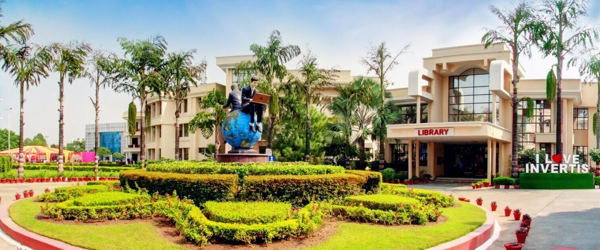

Invertis University is a leading private state university located in Bareilly, Uttar Pradesh, India. Established initially as a single management institute in 1998, it achieved full university status in 2010 under the Uttar Pradesh State Private Universities Act. The university is fully approved by the University Grants Commission (UGC), as well as the AICTE and NCTE, allowing it to independently award its own valid undergraduate, postgraduate, and doctoral degrees.
